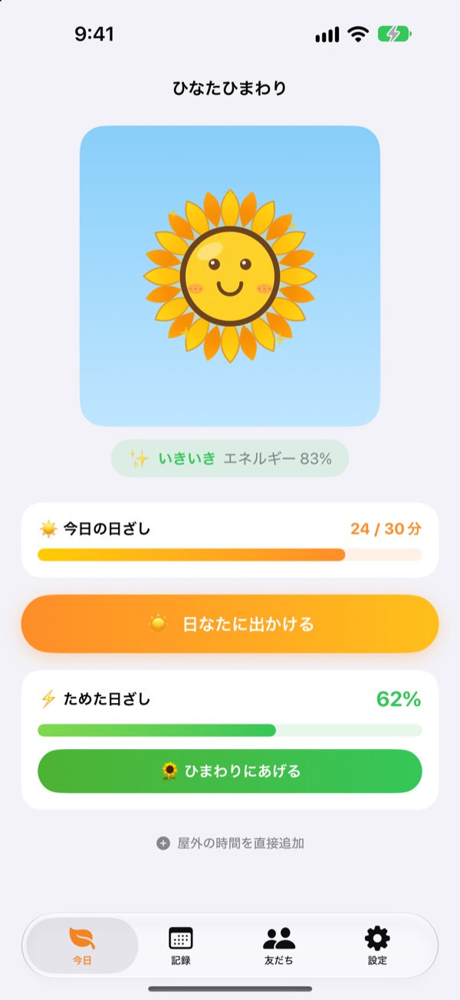
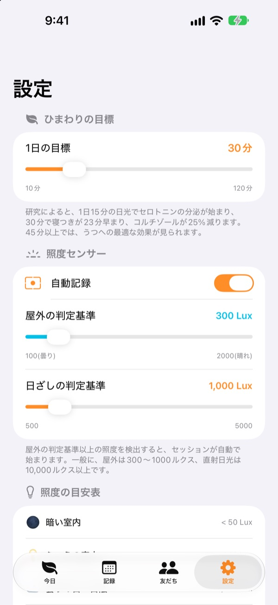
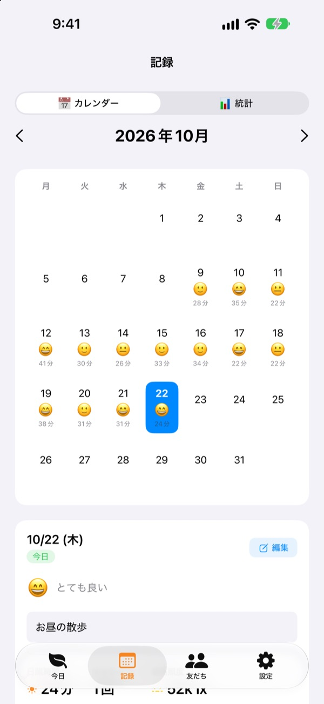
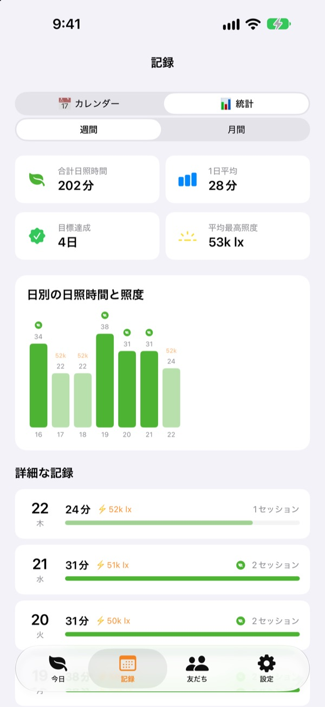

今日浴びた日ざしで、
ひまわりを育てよう
外に出るだけで、日ざしを浴びた時間が自動でたまります。ためた日ざしをひまわりにあげると元気になり、何日か放っておくとしおれてしまいます。
すべての機能が無料です。記録は端末の中だけに保存されます。

日ざしをためてみよう
明るさと時間を選んで日ざしを浴びたら、しおれかけたひまわりにあげてみてください。
今日、日ざしを何分浴びましたか？
通勤のほんの数歩、お昼を買いに出た少しの時間。一日中室内にいると、ほとんど日に当たらなかったことに夜になって気づきます。ひなたひまわりは外で過ごした時間を数字で見せてくれて、ひまわりが明日のお散歩を待っています。
外に出れば、自動で測ります
日なたに出かける をタップして外に出ると、前面カメラの露出情報からまわりの明るさを測ります。屋外並みの明るさが30秒ほど続くと記録が始まります。写真を撮ったり保存したりすることはありません。
記録が始まったあとは、2分ごとに20秒だけセンサーをオンにしてバッテリーを節約します。

日ざしと気分を毎日残せる
カレンダーで日付ごとに日ざしの時間、気分の絵文字、ひとことメモを残せます。外にいたのに測れなかった時間は 屋外の時間を直接追加 で5分から120分まで追加できます。

1週間、1か月の流れが見える
週間・月間の統計で、目標を達成した日や平均の日ざし時間をふり返れます。1日の目標は10分から120分まで設定でき、今日あと何分浴びればいいかが最初の画面でわかります。
ホーム画面とロック画面のウィジェット、ダイナミックアイランドでも、今日の日ざしとひまわりの様子を確認できます。

はじめかたは3ステップ
- 1
1日の目標を決める
最初は30分です。設定で10分から120分まで変えられます。
- 2
日なたに出かける
日なたに出かけるをタップし、アプリを開いたまま外へ。カメラへのアクセスは最初に一度だけ確認します。 - 3
ひまわりにあげる
ひまわりにあげるで、ためた日ざしをエネルギーに変えます。
明るさによるたまり方
- 300ルクス未満
- 弱い光：日ざしの時間には数えません
- 300〜1,000ルクス
- 屋外・曇り：10分で1〜3%
- 1,000〜10,000ルクス
- 日ざし：10分で3〜33%
- 10,000ルクス以上
- 強い日ざし：10分で33%以上
- ためた日ざし
- 浴びた分数 × 平均の明るさ ÷ 3,000（1回につき最大100%）
- ひまわりのエネルギー
- 1時間に2.5%ずつ、1日でおよそ60%減ります
屋外の判定基準は、設定で100〜2,000ルクスの間で変えられます。初期値は300ルクスです。
よくある質問
日ざしはどうやって測るのですか？
前面カメラの露出情報から、まわりの明るさ（照度）を推定します。屋外並みの明るさがしばらく続くと、記録が自動で始まります。写真を撮ったり保存したりすることはありません。
測っているあいだ、バッテリーを多く使いませんか？
日ざしを確認したあとはセンサーをつけっぱなしにせず、2分ごとに20秒ほどだけオンにして測り直します。それ以外の時間はタイマーだけで記録するので、バッテリーの消費をおさえられます。
ひまわりがすぐしおれてしまいます。
ひまわりは1時間に2.5%ずつエネルギーを失います。日ざしをためたら ひまわりにあげる で渡してあげてください。晴れた日に直射日光の下で15〜20分浴びれば、1日に減った分をまかなえます。
外にいたのに記録されませんでした。
最初の画面の下にある 屋外の時間を直接追加 から、5分から120分まで追加できます。曇りの日に記録が始まりにくいときは、設定で屋外の判定基準を下げてみてください。
友だち機能はどう使いますか？
友だちと近く（10mほど以内）で、ふたりとも日ざしを測っていると自動でつながります。はじめての相手とは「一緒に浴びる」を確認してからつながり、その後は自動です。一緒に浴びると花びらがカラフルに染まり、3日かけてもとの色に戻ります。友だちタブには一緒に過ごした記録が残ります。ふたりともアプリが入っていて、Bluetoothとローカルネットワークへのアクセスを許可している必要があります。
本当に無料ですか？
はい。広告も課金もなく、すべての機能を使えます。気に入ったらアプリ内でチップを送ることもできますが、送っても機能は変わりません。
記録をバックアップしたり移したりできますか？
記録はサーバーを使わず端末の中だけに保存され、直近90日分が残ります。専用のバックアップ機能はありませんが、iCloudやパソコンでのiPhoneのバックアップには含まれます。
記録をすべて消したいです。
アプリの設定で データをリセット をタップするか、アプリを削除するとすべての記録が消えます。元に戻せないのでご注意ください。
不具合はどこに報告すればいいですか？
下のメールアドレスか、GitHubのIssue（github.com/M1zz/SunlightTracker/issues）にお送りください。機種、iOSのバージョン、どんな状況で起きたかを書いていただけると助かります。ふだんは数日以内にお返事します。
ご質問やご意見は leeo@kakao.com までお送りください。